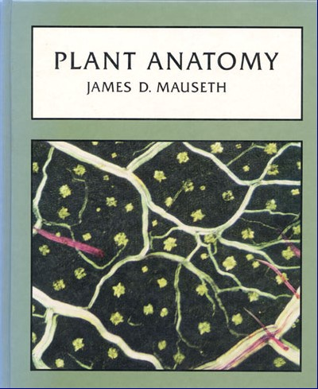

Topic 2 – Plant Tissues
Classification of plant tissues based on cell shape and cell wall thickness
Based on the cell shape, plant tissues are classified into two main types: parenchyma and prosenchyma. Based on the cell wall thickness, plant tissues are classified into parenchyma, collenchyma and sclerenchyma.
Parenchyma
Parenchyma is a tissue composed of living, thin-walled cells. Their shape can be isodiametric—meaning equal in all dimensions (spherical, cuboidal, as well as lobed or stellate)—or elongated to plate-like (such as certain epidermal and palisade cells). Intercellular spaces are frequently present between parenchymal cells. Parenchyma is a major component of ground tissues and most commonly serves as assimilative (photosynthetic), storing, covering functions.
Prosenchyma
Prosenchyma consists of highly elongated cells with pointed ends. Typical examples of prosenchymatous cells are tracheids within the wood (xylem) of conifers. At maturity, the cell walls of tracheids undergo lignification and the protoplast dies. Prosenchyma can also be formed by living cells, which are easily observed in mosses.
Collenchyma
Collenchyma is closely related to parenchyma and consists of living cells with unevenly thickened cell walls. It is primarily categorized into angular collenchyma, where cell walls are thickened at the corners where multiple cells meet, or lamellar (plate) collenchyma, which features thickened tangential walls (walls parallel to the organ's surface). In young cells, the thin sections of the cell wall can still expand, making collenchyma a common mechanical (supporting) tissue in young, actively growing parts of plant organs. It occurs mainly under the epidermis (hypodermis) in the stems of dicotyledonous plants or within leaf petioles. Collenchyma cells can also contain chloroplasts and carry out photosynthesis.
Sclerenchyma
Sclerenchyma is a mechanical support tissue characterized by uniformly thickened cell walls. These cells develop a thick layer of secondary wall that later lignifies, causing the protoplast to die. At maturity, sclerenchyma cells are dead, often leaving a negligible cell lumen inside. Narrow, sometimes branching channels (pits) form in areas where the primary wall previously contained fields of plasmodesmata. The most common types of sclerenchyma cells are sclerenchyma fibers located in the xylem (wood) and phloem (bast) of vascular bundles, or they may form sclerenchymatous sheaths and strands throughout plant organs. Isolated sclerenchyma cells or small clusters of them found in leaves, stems, or fruits are called sclereids (stone cells).
Classification of plant tissues based on their functions
Based on their function, plant tissues are generally classified into nine groups: meristematic, covering, absorbing, assimilative, storage, mechanical, conducting, aerating, and secretory tissues.
Meristematic tissues
Meristematic cells are typically small, isodiametric cells with thin primary cell walls, a large nucleus, and dense cytoplasm. They contain only small, poorly differentiated organelles and usually lack large vacuoles. Individual cells are tightly packed, with little or no intercellular space between them. Their cytological features reflect their high mitotic activity and capacity for continuous cell division. Within the apical meristem, cells are not distributed randomly but show a characteristic zonation, with different regions contributing to the formation of specific tissues and organs. According to their position in the plant body, meristems are classified as apical (located at shoot and root tips), axillary (situated in leaf axils and giving rise to axillary buds), lateral (responsible for radial growth), intercalary (located between mature tissues, particularly in grasses), and adventitious meristems, which arise at unusual positions during regeneration or vegetative propagation. Based on their origin, meristems may be primary, secondary, or mixed. Primary meristems are derived directly from embryonic meristematic cells and are responsible for primary growth. Secondary meristems originate through dedifferentiation of already differentiated tissues; a typical example is the cork cambium (phellogen). Mixed meristems combine both primary and secondary characteristics, as seen in the vascular cambium. The shoot apical meristem exhibits a distinct zonal organization. In the classical histogen theory, three histogens are distinguished: the dermatogen, which gives rise to the epidermis; the periblem, forming the cortex; and the plerome, producing the central vascular tissues. In modern developmental anatomy, these regions correspond approximately to the primary meristems known as the protoderm, procambium, and ground meristem, which give rise to the epidermis, vascular tissues, and ground tissues, respectively.
The tissues described above are so-called true tissues, which are characteristic of higher plants and arise from meristematic cells or meristematic tissues through repeated cell division, subsequent growth, and differentiation. Their cells have a common origin, remain structurally connected, and are specialized to perform specific functions. In contrast, false tissues (pseudotissues) develop through the aggregation or interweaving of originally independent cells or filaments and therefore lack the developmental organization typical of true tissues. False tissues are common in algae, fungi, and lichens, where they may morphologically resemble true tissues but differ in their origin. A typical example is fungal plectenchyma, which may occur in the form of pseudoparenchyma or prosenchyma and is formed by densely packed hyphae.
Open the Micrographs of plant cells and tissues with explanatory text created by James D. Mauseth.

OPEN WEBSITE